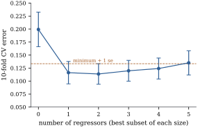

29.3 Cross-validation
The criteria of Section
29.2 correct the training error by a formula that
rests on assumptions. Cross-validation instead predicts
cases that the fit has not seen. It needs neither
29.3.1. K-fold and leave-one-out
Let the cases
The idea is old (Stone 1974; Geisser 1975; Allen 1974 for least squares). What cross-validation estimates is clearest when the cases are a random sample.
Let the cases be independent draws of
Proof. For
The expectation is over training sets as well as new
cases. Cross-validation therefore estimates the expected
error of the procedure at a slightly smaller
sample size, not the error of the particular fit
computed from all
Take
The error of the fitted model itself,

import numpy as np
rng = np.random.default_rng(2905)
n_s, k_s, sigma = 40, 10, 1.0
beta = np.r_[1.0, np.full(k_s, 0.5)] # intercept and ten slopes
def err_theory(m):
"""Expected error of a least squares fit to m cases (Chapter 14, normal regressors)."""
return sigma**2 * (1 + 1 / m) * (m - 2) / (m - k_s - 2)
def cv_kfold(X, y, K):
folds = np.arange(len(y)) % K # equal folds (cases are exchangeable)
sq = np.empty(len(y))
for f in range(K):
tr, te = folds != f, folds == f
b, *_ = np.linalg.lstsq(X[tr], y[tr], rcond=None)
sq[te] = (y[te] - X[te] @ b) ** 2
return sq.mean()
Ks = [2, 5, 10, n_s]
def simulate(reps):
cv = np.empty((reps, len(Ks)))
err_cond = np.empty(reps) # error of the fit at hand
for r in range(reps):
Xr = np.column_stack([np.ones(n_s), rng.normal(size=(n_s, k_s))])
yr = Xr @ beta + sigma * rng.normal(size=n_s)
b, *_ = np.linalg.lstsq(Xr, yr, rcond=None)
err_cond[r] = sigma**2 + np.sum((b - beta) ** 2) # new case X0 ~ N(0, I)
cv[r] = [cv_kfold(Xr, yr, K) for K in Ks]
return cv, err_cond
cv, err_cond = simulate(300) # the book's figures use 4000
for j, K in enumerate(Ks):
print(f"K = {K:2d}: mean {cv[:, j].mean():.3f} (theory {err_theory(n_s - n_s // K):.3f}), sd {cv[:, j].std():.3f}")
print(f"error of the fit at hand: mean {err_cond.mean():.3f} (theory {err_theory(n_s):.3f})")
print("correlation of CV_10 with it:", np.corrcoef(cv[:, 2], err_cond)[0, 1])Bates, Hastie and Tibshirani (2024) study this
phenomenon for linear models. The spread falling with
29.3.2. The leverage shortcut
Leave-one-out looks expensive:
Let
(a)
(b)
(c) consequently
(29.3.1)
For least squares (
Proof.
(a) Write
(b) Let
(c) follows from (b), and for
The argument uses only that deleting a case gives the same answer as replacing its response by its own prediction. It covers the ridge estimators of Chapter 27 and the smoothers of Chapter 43 (Theorem 43.5.2), but not the lasso or subset selection, where deleting a case can change which coefficients are nonzero.
Section
27.2 already used the leave-one-out shortcut and GCV
to choose the ridge
For a linear smoother
Craven and Wahba (1979) introduced GCV for smoothing
splines and Golub, Heath and Wahba (1979) for ridge
regression, where it is leave-one-out after a rotation
that equalizes the diagonal of
For the state regression of Example (Violent crime in the states)
with all five regressors,
import numpy as np
import statsmodels.api as sm
data = sm.datasets.statecrime.load_pandas().data.drop(index="District of Columbia")
names = ["hs_grad", "poverty", "single", "white", "urban"]
y = np.log(data["violent"].to_numpy())
Zs = data[names].to_numpy()
Zs = (Zs - Zs.mean(axis=0)) / Zs.std(axis=0) # standardized regressors
X = np.column_stack([np.ones(len(y)), Zs])
n, p = X.shape
Omega = np.diag([0.0] + [1.0] * (p - 1)) # ridge penalty, intercept left free
def ridge_fit(X, y, lam):
return np.linalg.solve(X.T @ X + lam * Omega, X.T @ y)
lam = 5.0
S = X @ np.linalg.solve(X.T @ X + lam * Omega, X.T) # the smoother matrix
resid = y - S @ y
loo_short = resid / (1 - np.diag(S)) # the shortcut
loo_brute = np.array([y[i] - X[i] @ ridge_fit(np.delete(X, i, 0), np.delete(y, i), lam)
for i in range(n)]) # n refits
print("largest discrepancy:", np.max(np.abs(loo_short - loo_brute)))
cv_loo = np.mean(loo_short**2)
gcv = np.mean(resid**2) / (1 - np.trace(S) / n) ** 2
print(f"CV_n = {cv_loo:.5f}, GCV = {gcv:.5f}, tr(S) = {np.trace(S):.3f}")Remark (Sketch: leave-one-out behaves like
AIC). If every leverage is close to
29.3.3. Choosing a model by cross-validation
To choose among candidates, take the smallest
For each size from

import itertools
import numpy as np
import statsmodels.api as sm
data = sm.datasets.statecrime.load_pandas().data.drop(index="District of Columbia")
names = ["hs_grad", "poverty", "single", "white", "urban"]
y = np.log(data["violent"].to_numpy())
n = len(y)
def design(cols):
return np.column_stack([np.ones(n)] + [data[c].to_numpy() for c in cols])
def sse(cols):
X = design(cols)
b, *_ = np.linalg.lstsq(X, y, rcond=None)
return np.sum((y - X @ b) ** 2)
# best subset of each size, by residual sum of squares
best = [min(itertools.combinations(names, k), key=sse) for k in range(len(names) + 1)]
rng = np.random.default_rng(2906)
K = 10
folds = rng.permutation(np.arange(n) % K) # a random split into 10 folds of 5
cv, se = [], []
for cols in best:
X = design(cols)
fold_err = []
for f in range(K):
tr, te = folds != f, folds == f
b, *_ = np.linalg.lstsq(X[tr], y[tr], rcond=None)
fold_err.append(np.mean((y[te] - X[te] @ b) ** 2))
cv.append(np.mean(fold_err))
se.append(np.std(fold_err, ddof=1) / np.sqrt(K)) # the usual (optimistic) standard error
cv, se = np.array(cv), np.array(se)
k_min = int(np.argmin(cv))
k_1se = int(np.min(np.nonzero(cv <= cv[k_min] + se[k_min])[0]))
for k, cols in enumerate(best):
print(f"{k} regressors {cols}: CV {cv[k]:.4f} (se {se[k]:.4f})")
print("minimum CV at size", k_min, "; one-standard-error rule chooses size", k_1se)The example has a flaw: the best subset of each size was found from all fifty states, and only its fitting was cross-validated.
29.3.4. Cross-validating the whole procedure
Cross-validation estimates the error of whatever is
repeated inside the folds. Every decision that looked at
the responses, such as screening regressors, choosing a
subset, choosing
Take
- ten-fold cross-validation of the least squares fit,
after screening on all the data, averages
- ten-fold cross-validation that repeats the screening
inside every fold averages
- the actual prediction error of the screened and
fitted model averages
The wrong version reports that noise predicts the
response. The right one is slightly pessimistic, because
it uses
import numpy as np
rng = np.random.default_rng(2907)
n, m, keep, K = 50, 200, 5, 10
def screen(X, y):
"""Indices of the `keep` columns most correlated with y."""
Xc, yc = X - X.mean(axis=0), y - y.mean()
corr = np.abs(Xc.T @ yc) / np.sqrt(np.sum(Xc**2, axis=0) * (yc @ yc))
return np.argsort(-corr)[:keep]
def fit(X, y):
A = np.column_stack([np.ones(len(y)), X])
return np.linalg.lstsq(A, y, rcond=None)[0]
def predict(b, X):
return b[0] + X @ b[1:]
def one_data_set():
X = rng.normal(size=(n, m))
y = rng.normal(size=n) # unrelated to every column
folds = rng.permutation(np.arange(n) % K)
cols = screen(X, y) # screening on ALL the data
wrong = right = 0.0
for f in range(K):
tr, te = folds != f, folds == f
b = fit(X[tr][:, cols], y[tr]) # wrong: screening done outside
wrong += np.sum((y[te] - predict(b, X[te][:, cols])) ** 2)
cols_f = screen(X[tr], y[tr]) # right: screen again in the fold
b = fit(X[tr][:, cols_f], y[tr])
right += np.sum((y[te] - predict(b, X[te][:, cols_f])) ** 2)
b = fit(X[:, cols], y)
truth = 1 + b[0] ** 2 + np.sum(b[1:] ** 2) # error on a new case
return wrong / n, right / n, truth
res = np.array([one_data_set() for _ in range(200)])
print("average CV, screening outside the folds:", res[:, 0].mean().round(3))
print("average CV, screening inside the folds: ", res[:, 1].mean().round(3))
print("average true error of the fitted model: ", res[:, 2].mean().round(3))When cross-validation is used both to choose among
candidates and to report the error of the choice, the
same problem appears in a milder form. The smallest of
many cross-validation estimates is biased downwards as
an estimate of the error of the model it picks (Section 29.5). The
remedy is nested cross-validation: an
outer loop holds out folds for assessment, and inside
each outer training set an inner cross-validation makes
the choice (Varma and Simon 2006). The outer estimate
then describes the whole procedure, choice included, at
sample size
29.3.5. Exercises
A. Check your understanding
In Example (Bias and spread of K-fold cross-validation),
compute
Solution.
B. Practice
For the intercept-only model, show that the
leave-one-out residual is
Solution. Without case
In Theorem 29.3.2,
suppose
Solution.
C. Going deeper
Generalize Proposition 29.3.1
to folds of unequal sizes
Suppose